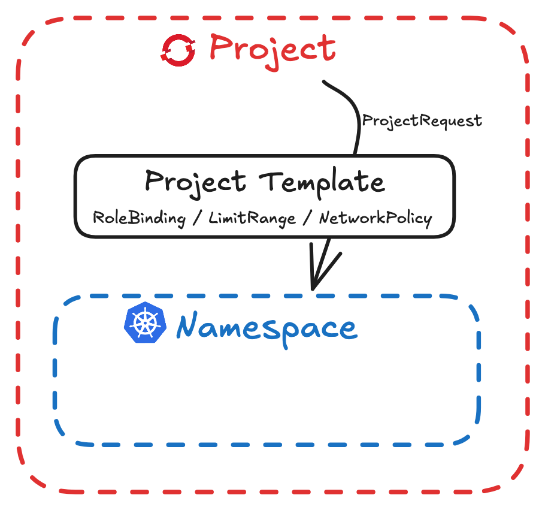

6. Enable Developer Self-Service
1. ResourceQuota¶
Workload Resource Limit
For resource limitating purpose, workloads can specify the following properties: - Resource limits: to limit the resources that a workload consumes. - Resource requests: to declare the minimum required resources, to prevent deployments of new workloads if the cluster has insufficient resources.
Cluster adminstrator might needs more control, by dividing workloads into namespaces. ResourceQuota defines constraint that applies to the whole namespace, more basic knowledge check here。
2. ClusterResourceQuota¶
Cluster administrators can use ClusterResourceQuota to apply restrictions across namespaces
创建¶
1. YAML¶
apiVersion: quota.openshift.io/v1
kind: ClusterResourceQuota
metadata:
name: example
spec:
quota:
hard:
limits.cpu: 4
selector:
annotations: {}
labels:
matchLabels:
kubernetes.io/metadata.name: example
2. Web Console¶
Administration > CustomResourceDefinitions
3. CLI¶
oc create clusterresourcequota example --project-label-selector=group=dev --hard=requests.cpu=10
查看¶
Users might not have read access to clusterresourcequota. OpenShift creates resources called AppliedClusterResourceQuota in namespaces that are affected by cluster resource quotas.
oc describe AppliedClusterResourceQuota -n example-2
3. LimitRange¶
LimitRange defines constraint that applies to Workload, for example: containers, pods, images, imagestream, and pvc.
apiVersion: v1
kind: LimitRange
metadata:
name: mem-limit-range
namespace: default
spec:
limits:
- default:
memory: 512Mi
defaultRequest:
memory: 256Mi
type: Container
Limit ranges can specify the following limit types:
default: default limits for workloads, eliminate a need to declare limits explicitly in each workload.defaultRequest: default requests for workloads
⚠️default>=defaultRequestmax: the maximum value of both requests and limits. Users cannot create workloads that declare limits or that make resource requests over the maximum.
⚠️ Consider allowing users who create workloads to edit maximum limit ranges.min: the minimum value of both requests and limits.
To ensure that users create workloads with enough requests and limits.maxLimitRequestRatio: the relationship between limits and requests. If you set a ratio of two, then the resource limit cannot be more than twice the request.
Warning
When a ResourceQuota/ClusterResourceQuota is present, all workloads must specify the corresponding limits and requests. When you set the default and defaultRequest keys in a LimitRange, workloads use the requests and limits from the limit range by default. So you will be able to create workloads without seeing this error:
...output omitted...
13s Warning FailedCreate replicaset/example-74c57c8dff Error creating: pods "example-74c57c8dff-rzl7w" is forbidden: failed quota: example: must specify limits.cpu for: hello-world-nginx; limits.memory for: hello-world-nginx; requests.cpu for: hello-world-nginx; requests.memory for: hello-world-nginx
...output omitted...
Info
LimitRange do not affect existing pods.
| CLI | |
|---|---|
oc get event --sort-by .metadata.creationTimestamp |
|
oc set resources deployment example --limits=cpu=[new-cpu-limit] |
4. Project Template¶
OC Project vs k8s Namespace
OpenShift introduces projects to improve security and users' experience of working with namespaces. The OpenShift API server adds the Project resource type.
When you make a query to list projects, the API server lists namespaces, filters the visible namespaces to your user, and returns the visible namespaces in project format.
OpenShift introduces the ProjectRequest resource type. When you create a project request, the OpenShift API server creates a namespace from a Project Template. By using a Project Template, cluster administrators can customize namespace creation. For example, cluster administrators can ensure that new namespaces have specific permissions, ResourceQuota, or LimitRange.

Resources¶
You can add any namespaced resource to the Project Template. For example:
- Role & RoleBinding
Add roles and role bindings to the template to grant specific permissions in new projects. The default template grants the admin role to the user who requests the project. - ResourceQuota & LimitRange
Add resource quotas to the project template to ensure that all new projects have resource limits. Therefore, better create alsoLimitRangewhen you haveResourceQuota- to reduce the effort for workload creation. - NetworkPolicy
Add network policies to the template to enforce organizational network isolation requirements.
Creation¶
Create a file with an initial template:
oc adm create-bootstrap-project-template -o yaml > file
The YAML file looks like this:
apiVersion: template.openshift.io/v1
kind: Template
metadata:
creationTimestamp: null
name: project-request
objects:
- apiVersion: project.openshift.io/v1
kind: Project
metadata:
annotations:
openshift.io/description: ${PROJECT_DESCRIPTION}
openshift.io/display-name: ${PROJECT_DISPLAYNAME}
openshift.io/requester: ${PROJECT_REQUESTING_USER}
creationTimestamp: null
name: ${PROJECT_NAME}
spec: {}
status: {}
- apiVersion: rbac.authorization.k8s.io/v1
kind: RoleBinding
metadata:
creationTimestamp: null
name: admin
namespace: ${PROJECT_NAME}
roleRef:
apiGroup: rbac.authorization.k8s.io
kind: ClusterRole
name: admin
subjects:
- apiGroup: rbac.authorization.k8s.io
kind: User
name: ${PROJECT_ADMIN_USER}
parameters:
- name: PROJECT_NAME
- name: PROJECT_DISPLAYNAME
- name: PROJECT_DESCRIPTION
- name: PROJECT_ADMIN_USER
- name: PROJECT_REQUESTING_USER
Note
When a user requests a project, OpenShift replaces the ${VARIABLE} syntax with the parameters of the project request, and creates the objects in the objects key.
objectscontains a list of resources to be createdparameterscontains a list of available parameters
Some resource in the project template such as quotas - do not have strict validation. -》 即使有错也不会报错！！比如把count/pod写成了count/pods。以防万一，可以这样做：
- 创建一个namespace
- 创建 resources 比如
RoleBinding直到获得预期的行为。 - 将 resources 用 YAML 打印出来，清理掉没必要的部分比如
status - 将 resources 加入
oc adm create-bootstrap-project-template -o yaml > file文件 - 再生成 project template:
oc create -f template -n openshift-config
Usage¶
Now we have created the project template, to use it, we update the project resource:
apiVersion: config.openshift.io/v1
kind: Project
metadata:
...output omitted...
name: cluster
...output omitted...
spec:
projectRequestTemplate:
name: project-request
Reverse the usage
To revert to the original project template, modify the project resource to clear the spec resource to match the spec: {} format using:
oc edit projects.config.openshift.io cluster
查看pod的重启：
watch oc get pod -n openshift-apiserver
5. Self-provisioner role¶
userwith the self-provisionerclusterrolecan create projects- By default, the self-provisioner role is bound to all authenticated
user
Warning
Remember that user with namespace permissions can create namespace that do not use the project template.
查看该role的rolebinding：
[user@host ~]$ oc describe clusterrolebinding.rbac self-provisioners
Name: self-provisioners
Labels: <none>
Annotations: rbac.authorization.kubernetes.io/autoupdate: true
Role:
Kind: ClusterRole
Name: self-provisioner
Subjects:
Kind Name Namespace
---- ---- ---------
Group system:authenticated:oauth
Warning
Annotations: rbac.authorization.kubernetes.io/autoupdate: true确保 self-provisioners 这样的 ClusterRoleBinding 会在集群更新时自动同步到最新的系统策略，保持集群安全和策略一致性。
修改¶
to disable self-provisioning, using bash:
oc annotate clusterrolebinding/self-provisioners \
--overwrite rbac.authorization.kubernetes.io/autoupdate=false
oc patch clusterrolebinding.rbac self-provisioners \
-p '{"subjects": null}'
or edit YAML:
oc edit clusterrolebinding/self-provisioners